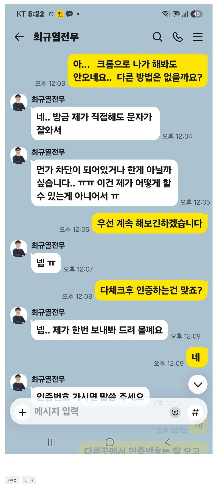

[파산자대출] 진심으로 너무감사합니다
작년 5월 파산 면책후 나름 열심히 노력해 올 1월부터 지입 개인사업자를 시작했습니다. 카드나 여유자금없이 주위분들 도움만으로 고유가 버티기가 힘들더라고요.. 나름 벌이는 되지만 고유가에 주위분들께 갚아가며 버티기가 벅차던터에 우연찮게 또 두려움에 연락을 해봤던 뱅크앤론. 그냥 오늘 승인후 감사하단 말밖엔 없네요 제나이 50중반에 비대면으로 진행하다보니 안되거나 못찾는것도 많아 엄청 연락드리는데도 바로바로 도움주시고 그저 감사하단 말밖에 없네요.
저같이 다시 재기하려는 상황이 쉽지않은데 친절히 알려주셔서 다시 좋은기회 열심히 일할수있게 도움주셔 감사합니다.
최규열전무님 감사합니다. 열심히 갚고 다시 재기잘하겠습니다. 한번더 감사합니다

https://cafe.naver.com/cityman88/312264